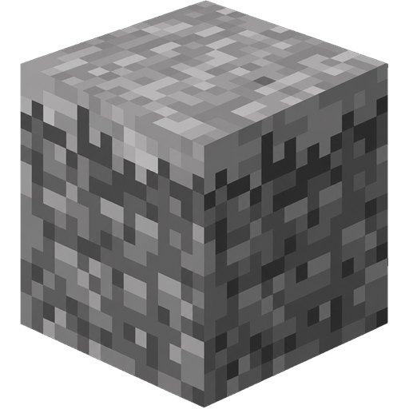
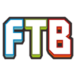

Modpacks from five libraries
Pick a pack, click install. Legism downloads it ten files at a time, checks every hash, retries what drops, and gives the new instance the pack's own picture as its icon.
ModrinthCurseForgeFTBTechnicATLauncher
v1.8 Modpacks from FTB, Technic and ATLauncher
Legism is a free Minecraft launcher built on Legacy Launcher — with the ads and telemetry taken out, and instances, mods and whole modpacks from five libraries put in their place.

Features
No third-party tools, no copying jars by hand, no browser tabs full of download buttons.
Pick a pack, click install. Legism downloads it ten files at a time, checks every hash, retries what drops, and gives the new instance the pack's own picture as its icon.
Every version with its changelog. The pack's files change; your mods, worlds and settings stay.
Separate installs with their own mods, worlds, settings and play time. Icons, groups, copies and one-file export.
Mods, resource packs, shaders, data packs and addons from Modrinth and CurseForge — searched, installed with their dependencies and updated all at once, straight into the instance you are editing.
Play without a Microsoft account, or sign in with Ely.by in the browser to see your skin in game without any mods.
Vanilla, Paper or Purpur, downloaded for you and run with a live console, a server.properties editor and a plugin catalog.
Your profile shows the instance you are playing and for how long.
A new version of the launcher installs itself when you say so.
When the game falls over, the launcher reads the log and says what most likely caused it.
Compare
Against the launcher it grew out of, and against the best-known open one.
| Legism | Legacy Launcher | Prism Launcher |
|---|
Legacy Launcher as of the source this fork started from.
Download
Java is bundled with every build, so there is nothing else to install.
FAQ
An independent, hobbyist fork of Legacy Launcher. The ads and telemetry are cut out; instances, a mod catalog, modpacks and local servers are added in their place. It used to be called "Legacy by tgsko".
Minecraft is a paid game, and the launcher neither sells nor grants it. Legism launches the game and manages your instances.
The source is open — read it or build it yourself. Only download it from this site or the GitHub releases page; copies from anywhere else are unverified.
The installer sets Legism up like any other program, with shortcuts. The portable version unpacks into any folder and leaves the system alone — handy on a flash drive, and it carries your instances along with it.
No. One is built in, so the CurseForge catalog works straight away. You can enter your own in the settings if you like.
Their authors only allow downloads through CurseForge's own app, and Legism respects that. Everything else installs, and a window lists those few files with a Download button each — save them to your Downloads folder and the launcher moves them into the instance by itself.
In GitHub Issues or our chats. Please do not report problems with this fork to the Legacy Launcher team — they have nothing to do with it.
Ask other players for help, follow releases, or suggest the next feature.
One download, Java included. Your first instance is a couple of clicks away.
Works with
The launcher Legism grew out of, and the services its accounts, mods and modpacks come from. Thank you to everyone who runs them.

FTBModpacksfeed-the-beast.com CurseForgeMods and modpackscurseforge.com ModrinthMods and modpacksmodrinth.comLegism is not affiliated with or endorsed by any of these services; their names and logos belong to their owners.